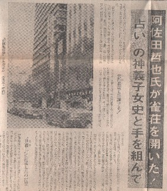
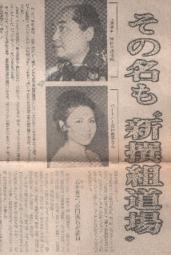

所ジョージの「笑ってこらえて」という番組が好き。その中に「ちょっと昔の歴史の旅」（というタイトルだったかな？）というコーナーがある。あのコーナーも面白い。そこで麻雀版、ちょっと昔の歴史の旅。1972年（昭和47年）６月30日に行ってらっしゃい。
当時の新聞を開いてみる。するとレジャーニュースという娯楽系の新聞に、こんな記事が。

おお、あの阿佐田哲也が雀荘をオープンしていたとは！。
さっそく中を読んでみる。
（昭和47年）６月26日、東京新宿三越裏に新撰組道場という名の雀荘がオープンした。
この雀荘は、麻雀評論家として知られる阿佐田哲也氏と占いで有名な神義子さんの共同経営。

阿佐田哲也が作家ではなく、麻雀評論家という肩書きになっているのもヘンな感じ。しかし昭和47年といえば、麻雀放浪記がブレークしたあと、麻雀新撰組が結成されて間もない頃。もちろん麻雀プロがどうのこうのなんていう状況にはなっていない頃の話し。また阿佐田氏も、文学界ではまだそれほどの存在ではなかったのか。
具体的な場所は、新宿駅中央口前、中央通りに面した東陽会館７F（写真にあるビル）。ワンフロアー333㎡（100坪）。フロアーの一部を阿佐田氏が関係する麻雀新撰組の詰め所として使用するので、客席は33席。とうぜん麻雀新撰組の小島武夫氏、古川凱章氏も協力する。
内部は、床にはジュータンを敷き詰め、雀卓は四隅に花柄模様の入った凝ったものを使用。おまけに牌が自動的に裏返るという最新式。しかしゲーム料金は１人１時間百円と廉価。
女性にも大いに来て頂きたいというので、支配人も白木ヨシ子さんという女性。九州でクラブを経営していたので、客扱いは手慣れたものだそうだ。
振興のために、いろいろな企画を考えている。その１つが小島武夫氏を講師とした女性麻雀教室。そのほかにサラリーマン用に接待麻雀コースまで考えているとか。小島氏によれば、「営業マンにとって接待麻雀は欠かせません。しかし勝つわけにはゆかず負けると払わなければならない。そのコツを伝授したい」とのこと。
そのほかには、全日本麻雀大会を開催する予定とか。
大会会長には阿佐田氏が就任。委員には五木寛之（作家）、伊藤宗一郎（衆議院議員）、近藤啓太郎（作家）、三遊亭夢楽（落語家）、宍戸錠（俳優）、寺内大吉（作家）、戸川昌子（作家）、長門勇・南田洋子夫妻、福地泡介（漫画家）、梶山俊之（作家）などが就任予定。
へ〜、そうそうたるメンバー。しかしこの大会、行われたのかな？。
阿佐田氏に聞いてみると、「なにしろ初めてやることですから、やってみないと分からない状態でして。とにかく軌道に乗せたいと思っていますが...」と、あまり歯切れの良い返答ではなかった。雀荘経営の目算は、メンタンピンドラ１のように簡単に計算できないかも。
と云うような記事だった。
この店、このあとどうなったんだろう....
|